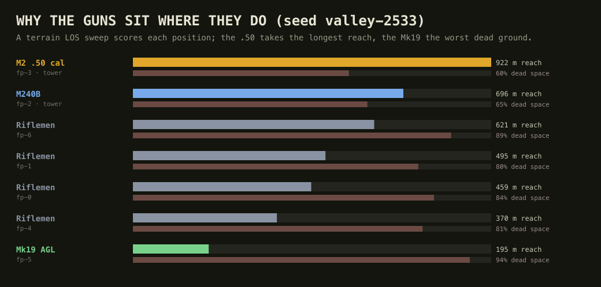
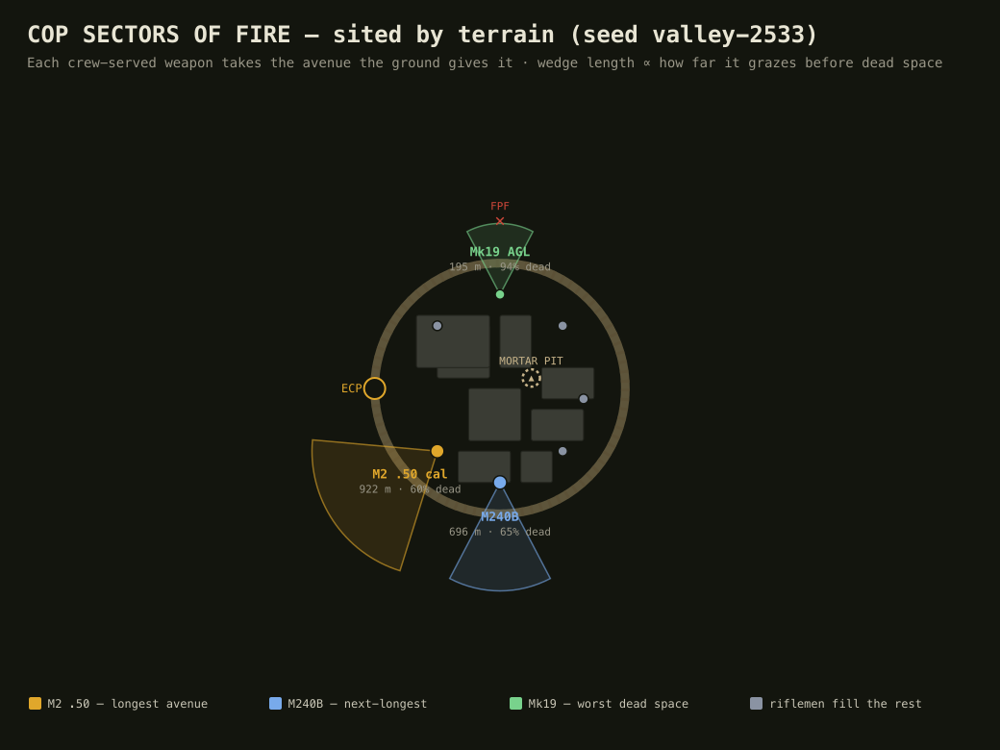
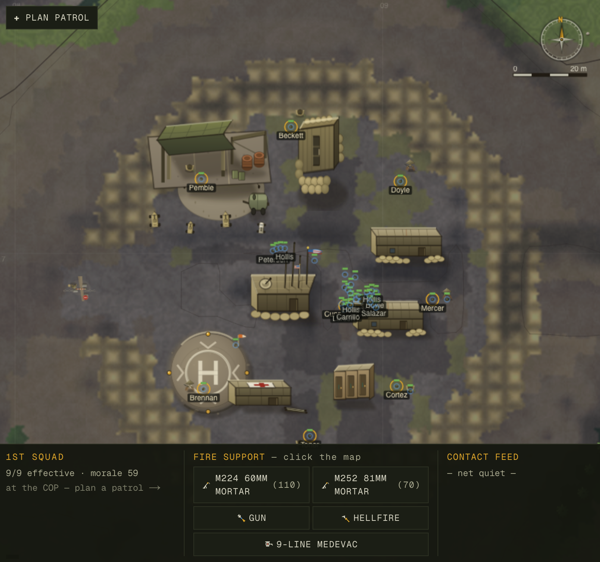
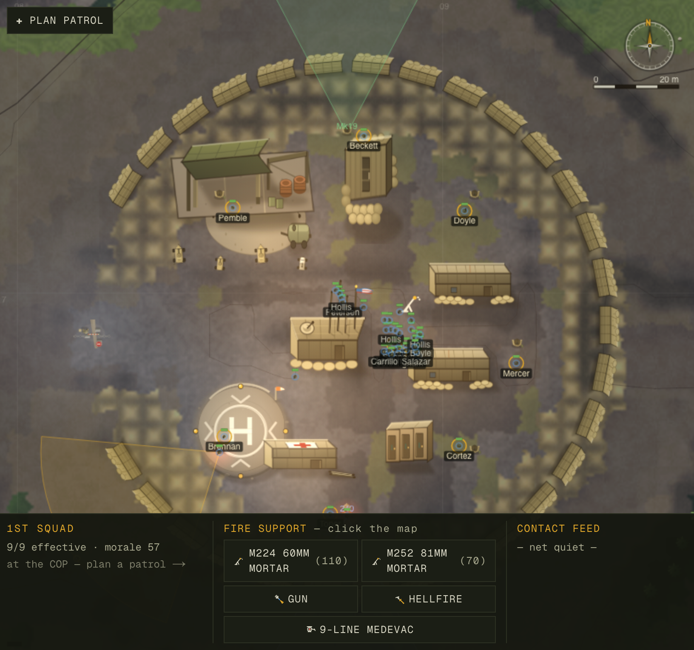
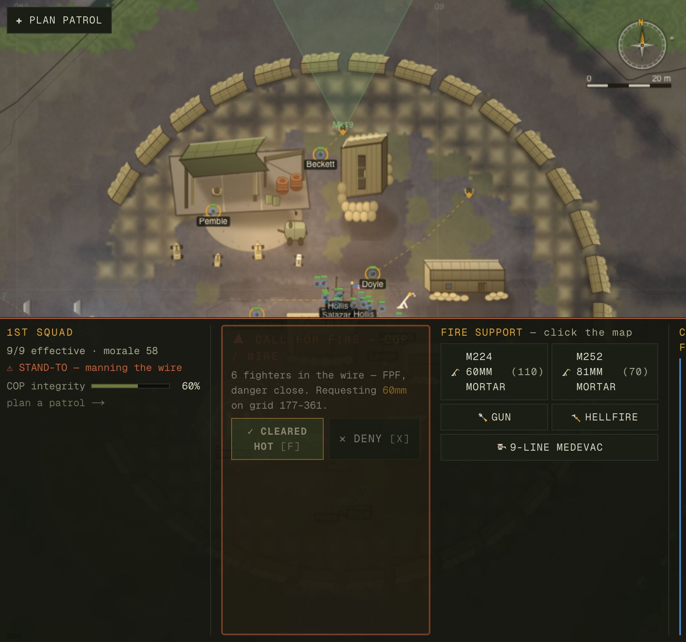
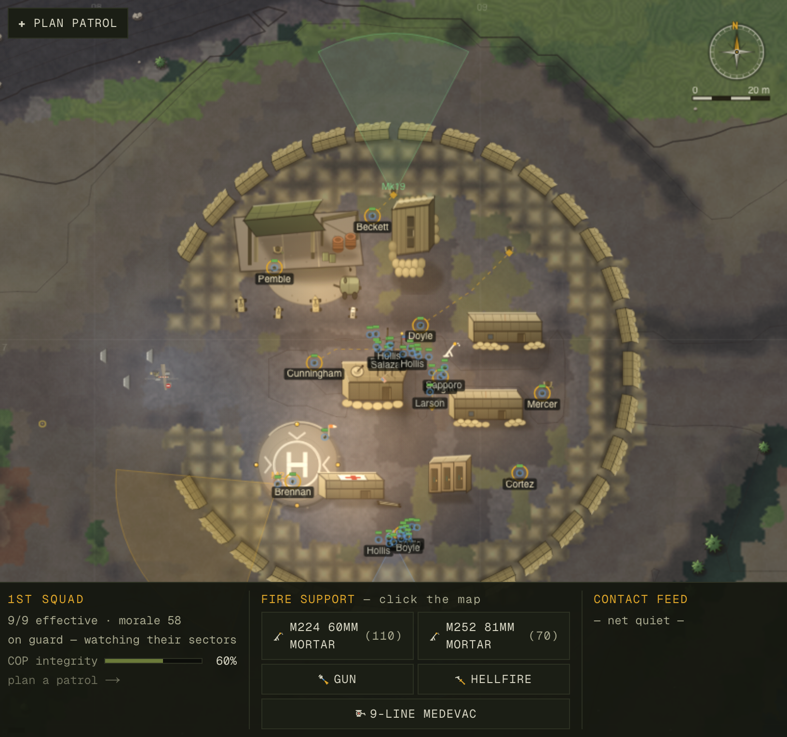

Development log · 2026-06-08
The Combat Outpost, made real
The COP was geometrically correct and dramatically inert — a cluster of b-huts on a tan patch, defended by eight identical nubs, garrisoned by men who loitered, with a fire plan no soldier would recognise and a wire attack you could only watch as a cutscene. This pass rebuilt every aspect of it toward one bar: a skeptical infantryman looks at it and says "holy shit — that's a COP." It was driven by a six-specialist design survey, a synthesis judge, and seven atomic commits, each verified.
The shape of the problem
The outpost data model — CopLayout in terrain.ts — was clean and the movement
audit (copaudit) was already 100% green across nine seeds: egress unblocked, 97% perimeter ring,
zero sealed pockets, zero unreachable posts. So this was never a bug hunt. It was the harder
job: taking a system that works and making it convincing — defensible, lived-in, alive.
A six-agent survey (one specialist each on defensive doctrine, visual fidelity, garrison life, facilities,
gameplay, and atmosphere), grounded in the real code and in ATP 3-21.8, fed a synthesis judge.
Its verdict was a Law-6 unification — three robust mechanisms instead of a pile of features:
env seam makes the base the warm, lit, human place in a
dark valley. One reused fire-request loop turns a wire attack into the commander's watch.
1 · The fire plan, sited by the terrain
Before, the perimeter was eight identical positions {id,cx,cy,facing,tower}; crew-served guns
were handed out by raw array index (m240→fps[0]), the tower flag was fp % 3, the
"mortar pit" was the flagpole, and there was no Mk19 at all. A range card a soldier would
laugh at.
Now a deterministic line-of-sight sweep runs over the baked elevation inside
buildCop(). For every position it marches its outward sector cell-by-cell, tracking the rising
horizon, and measures two things: the avenue score — how far down the sector the gun can graze
before terrain masks the ground — and the dead-space fraction. Then it sites the weapons the way a
platoon would:
- the M2 .50 cal (1830 m) takes the longest open avenue;
- the M240B (1100 m) takes the next;
- the Mk19 grenade launcher — whose 40 mm plunges — takes the worst dead-space sector, exactly where direct grazing fire fails and only high-angle fire reaches.


2 · A strongpoint you can see
The wire used to be a flat tan tint in the baked terrain. The art to fix it already existed in the
sprite manifest — hesco-straight, antenna-array, jersey-barrier,
ico-mortar — and was never drawn. drawCop() now paints the fortified silhouette: a
real HESCO bastion wall of gabion segments, a comms mast on the skyline, the
mortar pit, a serpentine ECP of staggered T-walls, drifting burn-pit smoke,
a flag that streams downwind, and the crew-served sectors of fire colour-coded by weapon.


3 · The one warm place in a dark valley
At night the COP used to go dark exactly like empty hillside. The fix is the second unifying idea: the
drawCop signature was widened to take a render-only env struct
({night, windX, windY, tNow}, mirroring the weather view-struct and never re-entering the sim).
An additive lighter pass then emits warm window glow (the TOC, aid station and chow hall
brightest — always manned), cold floodlight pools over the gate and LZ, and slow-blinking red tower
beacons — all gated on darkness so a daytime frame pays nothing.

4 · The watch — the hardest part of command
The design's soul is "you watch." Yet a complex attack on the COP itself was a passive
cutscene: the garrison has no maneuver task, so the call-for-fire system never fired for it. Now
tickCopDefense() watches the wire. When fighters mass against it while the garrison stands to, the
TOC raises a Final Protective Fire request — and the clock auto-pauses until you
CLEAR HOT or DENY.

It reuses the squad fire-request loop verbatim — one pending request, a 45-second cooldown, and it never auto-fires — so it obeys the ROE law: combat is 100% AI, but the human clears the fires. Verified headlessly on valley-2533: a quiet COP raises nothing; six fighters at the wire raise the FPF; approving it fires the mortar from the pit, expends four rounds (110→106), and kills an attacker.
5 · A garrison that lives
The COP was manned but lifeless — off-duty men loitered, sentries stared one way, stand-to only ever
reacted to contact, and fob.hesco (a 0–100 fortification stat) was written at birth and read
nowhere. Three additions, all deterministic, wired into tickGarrison:
- Work details — "a COP is never finished." A rotating slice of the off-duty riflemen
improve the wire; while they work,
fob.hescoclimbs (60.95→62.56 over two game-hours in test). The dead stat finally has a writer — and the squad panel a reader: a COP integrity bar. - Dawn/dusk stand-to (BMNT/EENT) — the whole garrison mans the wire at first and last light, the ritual every infantryman knows and the enemy favours, not just a reaction to a threat.
- Sweeping sentries — a guard now sweeps his gaze across his fighting position's sector (from the Phase-1 limits) instead of staring one fixed bearing.

Verification
Every commit kept the standing checks green and was proved before it landed.
| Check | Result |
|---|---|
| copaudit (9 seeds) | clean — 0 sealed pockets, 0 unreachable posts, 97% ring, 0 wire-pins (connectivity untouched by the mortar pit / new positions) |
| smoke (serialize round-trip) | SMOKE OK — no NaN, save/load identical; cop is seed-rebuilt, so zero migration |
| balance (stall check) | 8/8 deployments saw a firefight, 0 stranded, no stalls (KIA 0.13) |
| determinism | bit-identical — the LOS sweep and the sentry sweep reproduce exactly across two same-seed runs |
| tsc / build | clean / green across all seven commits |
| the watch (live + headless) | fires — request raised, auto-pause, approve → mortar from the pit, attacker down |
How it was built
This was an orchestration, not a solo sprint. A workflow fanned out six independent specialists
— each pinned to a senior persona, the real file:line facts, and ATP 3-21.8 — to
survey one axis of the COP and return scored, doctrine-cited proposals. A seventh judge deduped
them into a partitioned, dependency-ordered build plan (data spine first; render, world, and garrison behind it,
one writer per hot file). Then seven atomic commits implemented it, each with its own headless probe and live
capture, on a main shared with other agents committing in parallel.
What we did not do (restraint, logged)
- No terrain-stamped ECP chicane. A real serpentine would stamp impassable stubs into the
gate apron — and risk pinching the proven ≥3-cell egress corridor that
copauditguards. The chicane is render-only; the apron is untouched. fob.hescodoesn't yet feed combat. It is now written (work details) and read (the integrity bar), but coupling it to the FPF threshold or the enemy's effectiveness changes firefight balance and needs held-out tuning — deferred deliberately rather than shipped unproven.- The Mk19 isn't crewed full-time. Only two machine-gunners exist; the Mk19 sits emplaced and ready, manned at stand-to — realistic, not a stub to paper over.
Engineering record: docs/progress/2026-06-08-cop-overhaul/ (baselines, after-numbers,
live + diagram assets). Probes & tools: scripts/{cop-shot,cop-diagram}.{mjs,ts},
scripts/copaudit.ts. Touched: terrain.ts (the spine), world.ts +
helpers.ts (mortar origin + crew siting + the watch), draw.ts + WorldView.tsx
(the silhouette + atmosphere), garrison.ts (the living garrison), DeployScreen.tsx
(legibility). Built and verified by an autonomous agent; numbers are quoted as measured.